第 2 堂課
帳號啟用：OpenID 與因材網
複查雲端硬碟空間，認識 OpenID 帳號的用途與注意事項，並完成因材網帳號的綁定與登入測試。
開學前檢查
- 雲端硬碟再次確認 Google 雲端硬碟空間請縮減至 5GB 以下。
OpenID 帳號的應用
什麼是 OpenID？OpenID 是一個去中心化的網路身分認證系統。支援 OpenID 的網站不需要使用者記住各自的帳號密碼——只要先在作為 OpenID 身分提供者（identity provider, IdP）的網站註冊（例如 FB、Google、Yahoo 等皆有支援），之後就能在所有支援 OpenID 的網站上，使用同一組帳號密碼登入。
基隆市教育網路 OpenID 提供的服務
教育部
全國性服務
校園雲端電子郵件、教育雲、PaGamO、因材網、學習吧。
各縣市
地方性服務
宜蘭縣教育資源平台 Blog、花蓮縣字音字形學習網、嘉義市 ShineCue 多媒體電子書、臺南市 XOOPS／班網輕鬆架……等。
基隆市教育 OpenID 資料管理
- 從校網「學生天地」區，連到 OpenID 網頁，點選右上角「登入」。
- 點選右上角「資料」，可以更改密碼、個人資料，或啟用各種功能。
- 你的 OID 使用教育處 Google 教育版帳號，信箱為 sxxxxx@gm.kl.edu.tw（必須完整）；密碼為 OpenID 密碼（忘記密碼需請老師修改）。
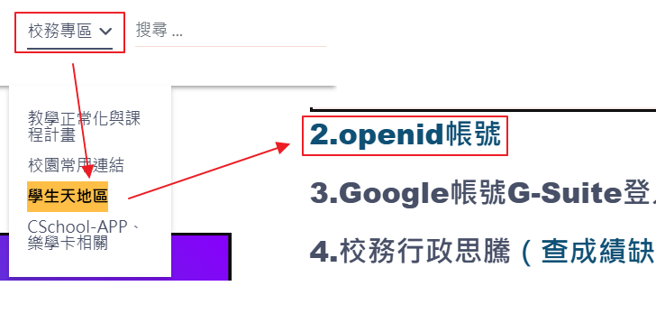
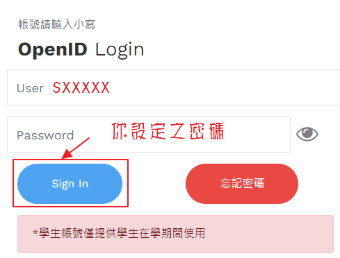
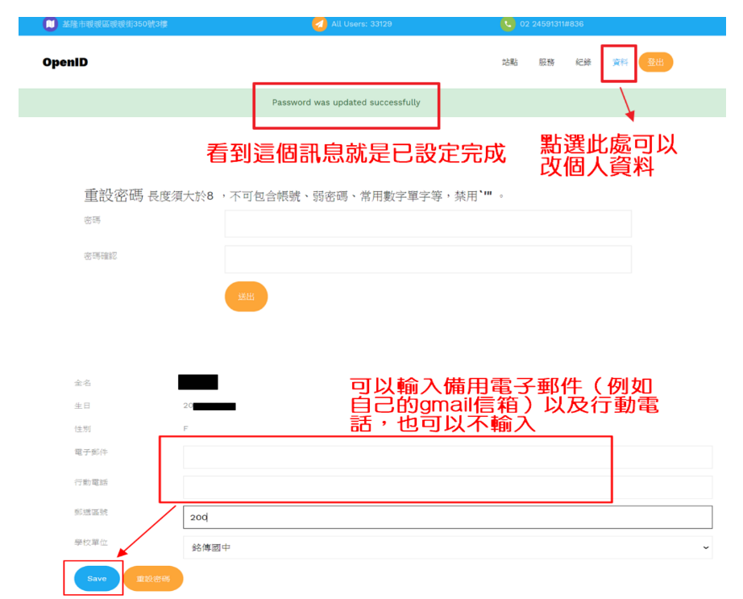
備註帳號只能使用到國中畢業，若未就讀基隆市立高中，帳號會直接刪除無法使用；學生帳號空間僅有 10G（雲端硬碟、E-mail、Classroom 交作業檔案……總數計算）；帳號僅供學校課程使用，請勿與其他軟體帳號連動（如 Google 相簿、遊戲帳號），避免帳號停用後無法使用。
因材網帳號啟用
透過 OpenID 綁定，之後登入因材網不必再多記一組帳密。
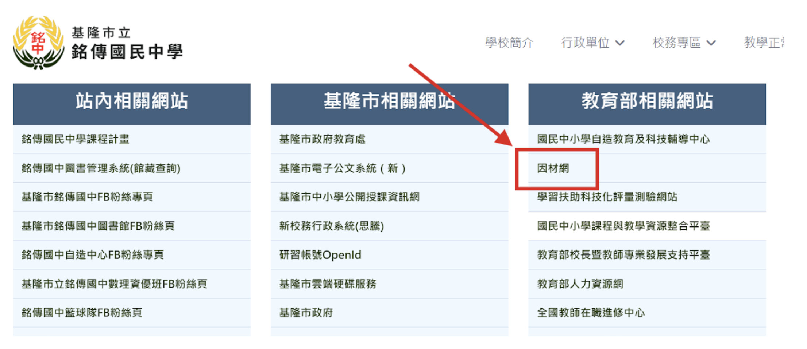
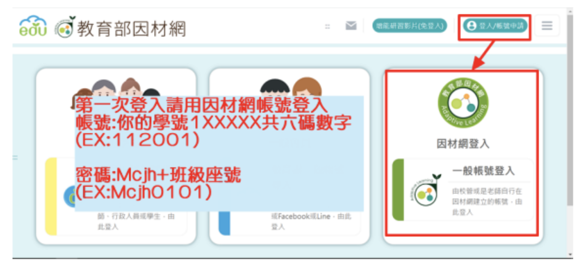
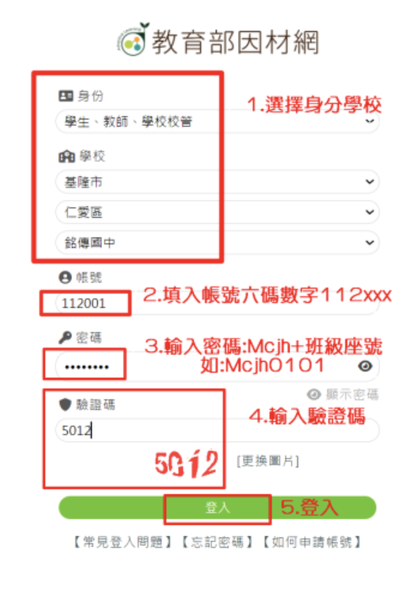
登入因材網
- 校網登入因材網（或連結網址：https://adl.edu.tw/HomePage/home/）。
- 進入因材網，點選右上角「登入／帳號申請」。
首次綁定 OpenID（已綁定過可跳過，直接看下一步）
- 第一次先選「因材網帳號登入」。帳號為學號數字六碼（見 113 學號對照表）；密碼為 Mcjh + 班級座號（M 需大寫）。
- 填入學校資訊與帳號密碼。
- 登入後會跳出輸入電子郵件信箱提醒，按確定，輸入 sxXXXX@gm.kl.edu.tw。
- 跳出建議綁定帳號視窗，按確定後綁定帳號。請點選下方「第三方綁定」→ 教育雲端帳號／縣市帳號。
- 綁定 OpenID 帳號。綁定後，之後只要用 OpenID 帳號登入即可，不必再多記一組因材網帳號。
完成綁定與登入測試
- 若是第一次使用教育雲端，會請你填寫建立介接帳號。已使用過教育雲端帳號者，此步驟會自動略過。
- 使用 OpenID 登入，測試是否能正確登入。
- 用 OpenID 重新登入後，若出現系統錯誤，按重新整理或 F5，稍待片刻即可進入系統。
- 登入過程請按下「同意授權」、登入帳號，最後系統會請你綁定因材網帳號。
重要綁定時請選擇正確的「班級、座號、姓名」，右下角資料選錯會被究責，請務必再三確認。
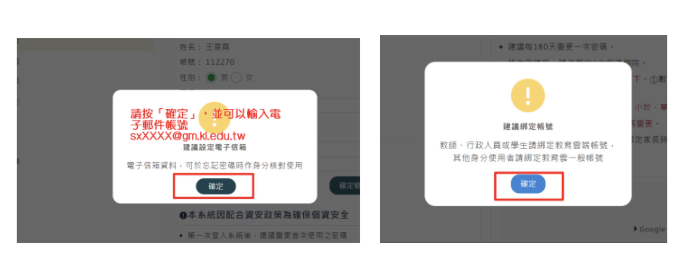
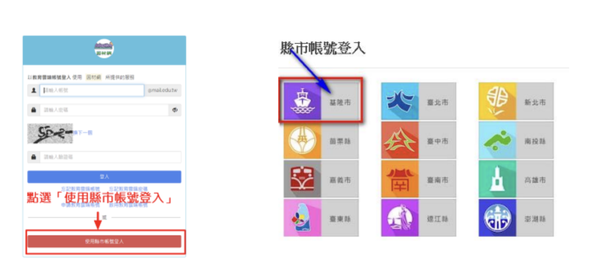
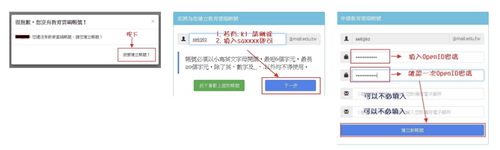
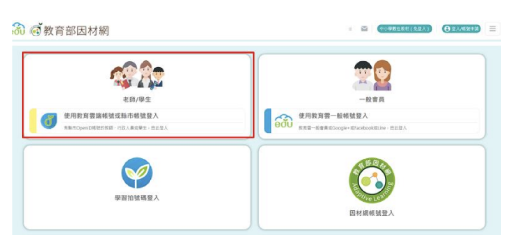
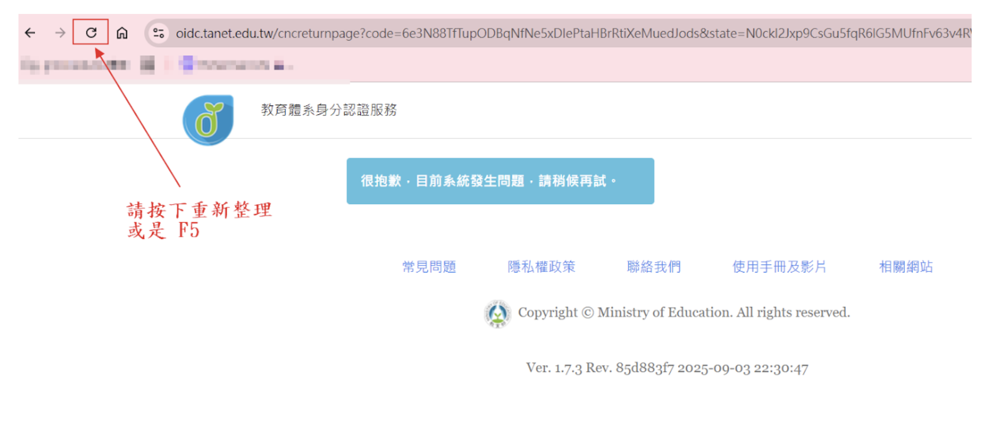
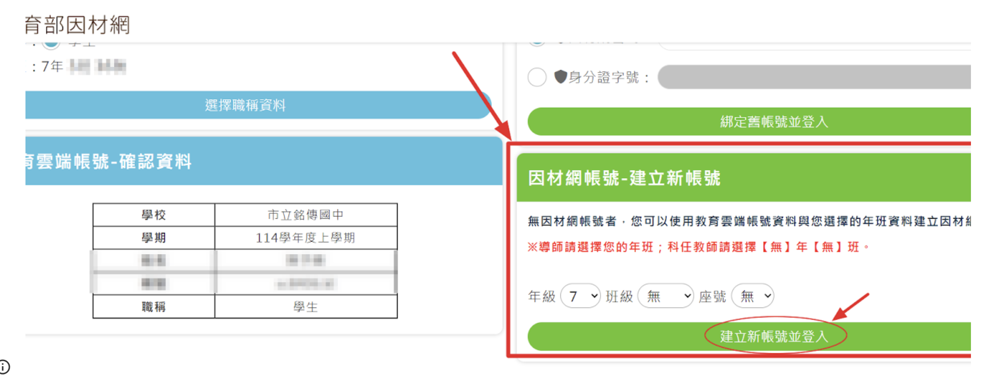